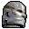
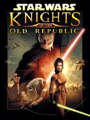

Star Wars: Knights of the Old Republic |
|
| Tiempo de juego | 5m 59s |
| Última actividad | 21/11/2025 13:55:49 |
| Añadido | 21/11/2025 13:45:04 |
| Modificado | 21/11/2025 13:49:08 |
| Estado de finalización | Jugado |
| Librería | Playnite |
| Fuente | |
| Plataforma | PC (Windows) |
| Fecha de lanzamiento | 15/7/2003 |
| Puntuación de la Comunidad | 90 |
| Puntuación de la Crítica | 94 |
| Puntuación de usuario | |
| Género | Adventure Role-playing (RPG) |
| Desarrollador | BioWare |
| Editor | Activision Aspyr Media LucasArts |
| Característica | Single Player |
| Enlaces | Steam GOG |
| Tag | |
KOTOR es Star Wars en su estado más puro. La historia transcurre 4000 años antes de las películas, así que olvidate de los Skywalker. Acá la amenaza es Darth Malak, un Sith con mandíbula de metal que está destruyendo todo.
Lo primero que tenés que saber es que esto es Rol clásico. No es un juego de acción rápida. El sistema de combate usa reglas de Dungeons & Dragons (d20). Vos elegís el ataque, y el juego tira dados invisibles. Si tu personaje es medio manco al principio, vas a errar mucho. ¡No te frustres! Es cuestión de subir estadísticas.
La magia está en la historia y en los compañeros. Vas a viajar en tu propia nave, el Halcón de Ébano, reclutando gente.
Y preparate, porque este juego tiene el giro de guion más famoso de la historia de los videojuegos. Evitá los spoilers como si fueran la peste. Si no sabés lo que pasa, te va a volar la cabeza.
Una ópera espacial perfecta que captura la magia de la trilogía original. Que la Fuerza te acompañe.